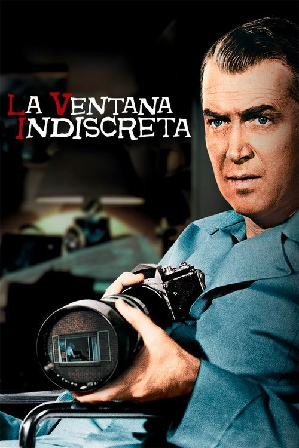

La ventana indiscreta (1954)
Sinopsis Rápida
¿Qué sucede cuando la realidad se confunde con la paranoia desde la ventana de tu propio apartamento? Un reportero confinado descubre un misterio escalofriante que lo obligará a cuestionar su propia cordura.
Sinopsis Detallada
En un caluroso verano neoyorquino, un fotógrafo con la pierna escayolada se ve obligado a observar el mundo desde su ventana. Armado con sus prismáticos, se convierte en un testigo involuntario de los sucesos en los edificios de enfrente, y se obsesiona con un posible crimen. La línea entre la realidad y la ficción se desdibuja a medida que el protagonista se sumerge en una espiral de sospechas, poniendo en riesgo su propia sanidad mental. La magistral dirección de Alfred Hitchcock crea una atmósfera de tensión constante que te mantendrá al borde del asiento hasta el sorprendente final. Una obra maestra del suspense que explora temas de voyeurismo y la naturaleza de la verdad.
¿Por qué tenés que verla?
- Una experiencia cinematográfica inolvidable gracias a la atmósfera de tensión magistralmente creada por Hitchcock.
- La actuación de James Stewart es excepcional, retratando la creciente paranoia del protagonista con una precisión escalofriante.
- Su impacto en el cine de suspense es innegable; 'La ventana indiscreta' se mantiene como un referente del género hasta el día de hoy.
- Un guion inteligente y lleno de giros inesperados que te mantendrán adivinando hasta el final.
Idea Extra
Análisis comparativo de las diferentes versiones de la película y sus diferencias, incluyendo la adaptación teatral.